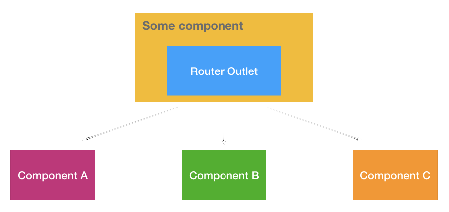
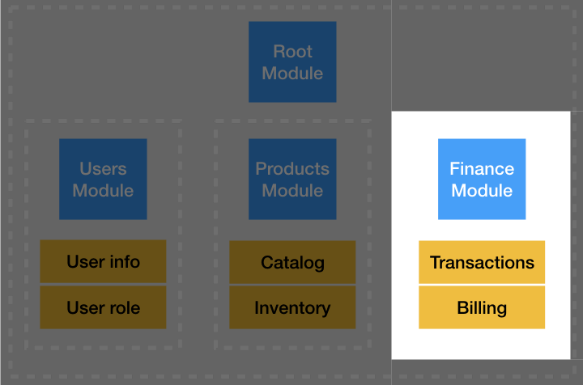

Navigation
Browser Navigation

How Browser Navigation works

Angular Router
Components Router
Basic configuration
app.routes.ts
import { Routes } from '@angular/router';
export const appRoutes: Routes = [
{ path: 'crisis-center', component: CrisisListComponent },
{ path: 'hero/:id', component: HeroDetailComponent },
{
path: '',
redirectTo: '/crisis-center',
pathMatch: 'full'
},
{ path: '**', component: PageNotFoundComponent }
];
Basic configuration
app.module.tsimport { RouterModule } from '@angular/router'; import { AppComponent } from './app.component'; import { appRoutes } from './app.routes'; @NgModule({ imports: [ RouterModule.forRoot(appRoutes) ], bootstrap: [ AppComponent ], }) export class AppModule { }app.component.html<router-outlet></router-outlet>
Navigation from HTML
app.component.html
<nav>
<a routerLink="/crisis-center">Crisis Center</a>
<a [routerLink]="['/hero', 323]">Batman</a>
<a [routerLink]="['/hero', 122]">Wonder Woman</a>
</nav>
<router-outlet></router-outlet>
Navigation from component
app.component.ts
class AppComponent{
constructor(
private router: Router,
private location: Location,
){}
getWonderWoman() {
this.router.navigate(['/hero', 122]);
}
goBack() {
this.location.back();
}
}
Route parameters
hero.component.tsclass HeroComponent implements OnInit{ constructor( private route: ActivatedRoute, private service: HeroService, ){} ngOnInit() { this.hero$ = this.route.paramMap.pipe( switchMap((params: ParamMap) => this.service.getHero(params.get('id'))) ); } }hero.component.html<div>{{ hero$ | async }}</div>
demo
Route Children
app.routes.ts
export const appRoutes: Routes = [
{
path: 'dc',
children: [
// http://www.hero-rentals.com/dc
{ path: '', component: DCComponent },
// http://www.hero-rentals.com/dc/crisis-center
{ path: 'crisis-center', component: CrisisCenterComponent },
// http://www.hero-rentals.com/dc/hero/122
{ path: 'hero/:id', component: HeroComponent },
],
},
];
demo
Multiple modules
Each module provides its own routing config
https://www.bolt.att.com/finance
// AppModule
imports: [
RouterModule.forRoot(appRoutes)
]
// vs
// FeatureModule
imports: [
RouterModule.forChild(partialModuleRoutes)
]demo
Route guards
CanActivate
Decide if component can be loaded or not.CanDeactivate
Decide if component can be unloaded or not.demo
Action Time

AppModule
- Implement routing configuration for:
AppModule, BoardModule & AuthModule - Implement IsAuthenticated CanActivate gaurd to protect our game views
- Fix http interceptor, navigate to /auth screen if server returns 401 response
- WelcomeComponent: Navigate to /game when clicking ‘GO’!
- NavBarComponent - implement all necessary navigations